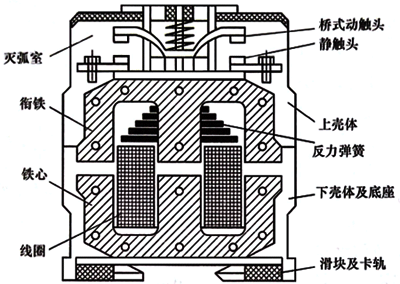
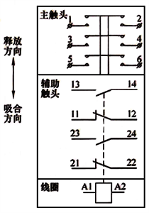
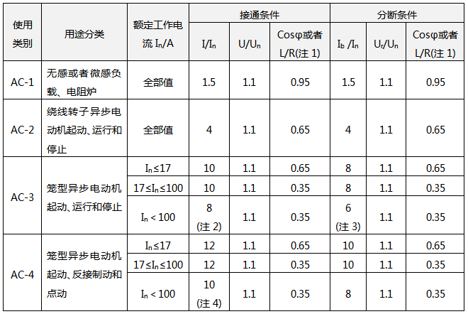
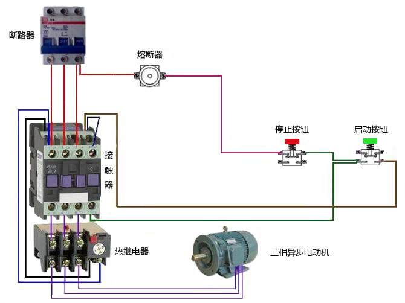
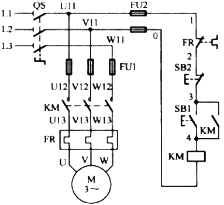
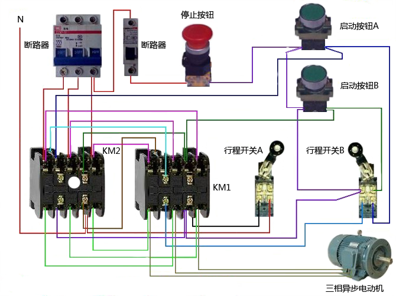
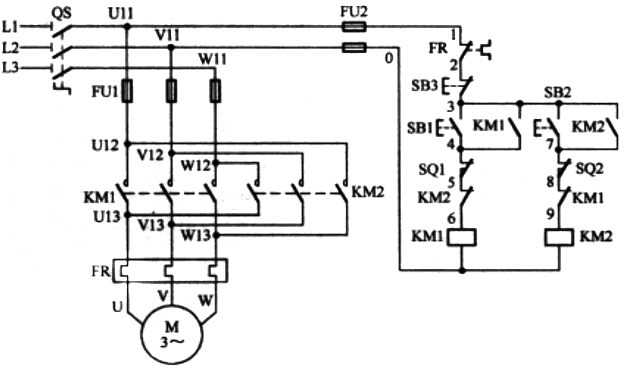

接触器是一种用来自动接通或断开带负载电路的电器，它可以频繁地接通或分断交流、直流电路，可以实现远距离操作控制，还可以配合继电器实现定时操作、联锁操作、各种定量控制和失电压、欠电压保护等。
交流接触器的主要控制对象是电动机，也可以用来控制其他电力负载，例如电热器、照明电器、电容器等。
交流接触器具有控制容量大、过载能力强、寿命长、简单经济等特点，是电力拖动与自动控制电路中使用最为广泛的低压电器之一。

图1 交流接触器的模式图
在图1中，我们看到接触器的主触头属于双断点的桥式结构。当线圈带电后，衔铁向下运行带动动触头拍合在静触头上。由于动、静触头中的电流方向相反，所以电流在两者之间会产生电动斥力。动触头的压力弹簧片用于消除电动斥力的影响。
当线圈失电后，动、静主触头在缓冲弹簧、触点弹簧和电动斥力的共同作用下返回到释放位置。在主触头打开的瞬间，动、静触头之间将产生电弧，灭弧罩的用途就是熄弧。
交流接触器的额定接通能力是指在规定的条件下能接通的电流值，而此时的触头不发生熔焊、不出现明显的烧损，且没有太强的飞弧。
接触器的额定分断能力是指接触器在规定的条件下能分断的电流值，而此时不出现触头被烧损到无法运行的程度，也不出现太强的飞弧现象。
交流接触器的电寿命是表示接触器耐抗电磨损能力的一个参数，用带载情况下的通断循环次数来表示。测量交流接触器的电寿命时不允许检修和更换零件。

图2 接触器图形符号(上部是一次触头，中间是二次触头，下部是驱动线圈)
交流接触器的分类
1、按主触点的极数分类
单极、双极、三极、四极和五极接触器。
单极接触器主要用于单相负荷，如照明回路和电焊机等负载；双极接触器用于绕线转子异步电动机的转子回路，起动电机时用来短接起动绕组;三极接触器用于三相电动机的控制;四极接触器用于三相四线制的照明线路，以及双速电动机; 五极接触器用来组成电动机的自耦变压器起动电路，还用来控制双速电动机控制电路以变换绕组接法。
2、按灭弧介质分类
交流接触器按灭弧介质分类分为空气绝缘式接触器、真空式接触器等。
依靠空气绝缘的接触器用于一般的负载，而采用真空绝缘的接触器则用于特殊环境下，例如煤矿，石化以及电压为660V和1140V等特殊场合。
3、按有无触点分类
交流接触器按有无触点分类可分为有触点的接触器和无触点的接触器。常见的接触器均为有触点的接触器，而无触点的接触器则利用晶闸管作为电路的通断元件，常用于易燃易爆的场合。
接触器的基本技术参数
1、交流接触器额定电压
交流接触器的额定电压指交流接触器主触点的额定工作电压，应当等于负载的额定工作电压。交流接触器一般有若干个额定电压值，在技术说明书中会同时列出相应的额定电流或控制功率。
通常最大工作电压即为额定电压，例如220-230V，230-240V，380-400V 和400-415V等。
2、额定电流
接触器的额定电流指交流接触器主触点的额定电流值。常用的额定电流等级为9A、12A、16A、26A、30A、40A、50A、63A、75A、95A；110A、145A、150A、175A、210A、260A；300A、375A、550A、1000A、1350A、1650A和2000A等。
3、接触器的接通和分断能力
接触器的接通和分断能力包括最大接通电流和最大分断电流两个指标。
最大接通电流是指触点闭合且不会造成触点熔焊的最大电流值，最大分断电流是指触点断开时能可靠地灭弧的最大电流。 一般通断能力是额定电流的5-10倍。通断能力与电压等级有关，电压等级越高则通断能力越小。
例如在AC-2、AC-3和AC-4下工作的交流接触器应当能满足AC-3类最大额定工作电流8倍的过电流。630A及以下的接触器承载时间是10s，630A以上的接触器承载时间会略微缩短。交流接触器的使用类别和通断条件见表。
表1 交流接触器的使用类别和通断条件

注1、表1中，I为接通电流；In为额定电流；Ib为分断电流；U为接通前电压；Un为额定电压；Ur为恢复电压。
注2、AC-1：cosΦ的误差为±0.05，L/R的误差为±15%；
注3、AC-2：I或者Ib的最小值为1000A；
注4、AC-3：Ib的最小值为800A；
注5、AC-4：I的最小值为1200A。
4、动作值
接触器的动作值分为吸合电压和释放电压。
吸合电压是指在接触器吸合前缓慢地增加线圈电压使交流接触器吸合的最小电压；释放电压是指缓慢地降低线圈电压使交流接触器释放的最大电压。一般规定：吸合电压不得低于线圈额定电压值的85%，释放电压则不高于线圈额定电压值的70%。
5、操作频率
接触器的操作频率指每小时允许操作次数的最大值。
每小时允许操作次数可分为：1次/h、3次/h、12次/h、30次/h、120次/h、300次/h、600次/h，1200次/h和3000次/h。操作频率影响到交流接触器的电寿命，还影响到交流接触器线圈的温升。
6、工作制
接触器有四种工作制，分别是8h工作制、不间断工作制，断续周期工作制和短时工作制。
8h工作制是接触器的基本工作制，约定发热电流参数就是按8h工作制确定的；不间断工作制较8h工作制严酷得多，接触器的触头容易出现氧化而线圈容易出现过热。在不间断工作制下，接触器需要降容使用；断续周期工作制的负载率则分别为标准值的15%、25%、40%和60%；短时工作制下触头的通电时间标准值分别为10min、30min、60min和90min等四种。
7、使用类别
接触器有四种标准使用类别，分别是AC-1、AC-2、AC-3和AC-4。其中AC-3用于电动机的直接起动和运行，AC-4则是电动机的可逆起动、反接制动和电动。
8、机械寿命和电寿命
接触器的机械寿命是指在正常维护和更换机械零件之前所能承受的无载循环操作次数，接触器的电寿命是指在标准使用状态下，无需修理或者更换零件的带载操作次数。
在无其他规定的条件下，接触器AC-3使用类别的电寿命次数应当不少于相应机械寿命次数的1/20。
控制电路参数
吸合线圈额定电压：接触器正常工作时线圈上所加的电压值。
交流接触器工作时线圈上所加的电压经常与主电路电压一致，但也可能不一致，有时还可能采用直流电源。这要由现场条件和设计决定。交流接触器线圈加载的电压是标准值，见表2。
表2 交流接触器线圈加载的电压标准数据
| 电源性质 | 电压范围/V | |||||
| 交流 | 24 | 36 | 48 | 110 | 127 | 220 |
| 直流 | 24 | 48 | 110 | 125 | 220 | 250 |
交流接触器的选用
交流接触器选用有7个原则，如下：
1、选择接触器的极数。
2、选择主电路的参数，包括额定工作电压，额定工作电流，额定通断能力和耐受过载能力等。
3、选择合适的控制电路参数。
4、选择合适的电寿命和使用类别。
5、对于电动机用接触器，要根据电动机运行的情况来分别考虑。
对于单向运行的电动机，例如风机、水泵类负载，可按AC-3类别来选用交流接触器；对于可逆的电动机，其反向运转、点动和反接制动时接通电流可达8倍额定电流以上，因此要按AC-4类别来选用交流接触器。当电动机的功率不大于630kW时，接触器应当能承受8倍额定电流至少运行10s。
选择电动机回路使用的交流接触器额定电流，有一个经验公式Ie=(PM×103)/(K×UN)，公式中，PM为电动机的功率，单位是kW；UN为的额定电压；Ie为交流接触器的额定电流；K为经验系数，一般取值为1-1.4。
对于一般的电动机，工作电流均小于额定电流，虽然电动机的起动电流可达额定电流的4-8.4倍，但是时间短，对接触器主触头的烧蚀作用不大，所以选择交流接触器额定电流的K系数为1.25即可。
例如电动机的功率为30kW，由式Ie=(PM×103)/(K×UN)，有Ie=(30×1000)/(1.25×380)≈63.2A，故取交流接触器的额定电流为63A。
需要指出的是：接触器的额定通断能力应当高于通断时电路中可能出现的电流值，而接触器耐受过载电流的能力则应当高于电路中可能出现的过载电流值。由于电路中这些数据均可以通过使用类别和工作制来确定，因此按使用类别和工作制来选用接触器是合理的。这也是用接触器生产厂家给出的接触器选用表格的依据。绕线转子异步电动机接通电流及分断电流都是2.5倍额定电流，可选用使用类别为AC-2的交流接触器。
6、电热设备选用交流接触器的原则：可按AC-1使用类别来选取，选用接触器时使得接触器的额定电流大于或等于1.2倍电热装置的额定电流即可。
7、切换电容器接触器的选用原则：因为电容器的充电电流可达1.43倍额定电流，因此选用切换电容器接触器时要按1.5倍电容器额定电流来考虑。
交流接触器与电动机的实物接线
1、三相异步电动机控制线路实物连接示意图


自锁正转控制电路
2、电动机正反转控制+限位控制实物接线图


带限位的接触器连锁正反转控制电路
接触器知识问答
1、接触器A1、A2的功能？
答：交流接触器是由线圈吸合引导触点开闭合，触点闭合同时才能使电源接通，进线端了L1、L2、L3和对应的出线端T1、T2、T3相通。A1和A2是接触器线圈电源接口，是控制线圈动作的根源。
2、接触器线圈电压应该怎么选择？
答：交流接触器线圈电压可以根据控制接触器开闭合上一级控制器输出电压来选择。例如：控制接触器的上一级控制器是220V，那么选择线圈为220V根据实际情况而定接触器线圈电压。A1和A2是接触器线圈电源接口，如果是220V，则A1和A2分别接入一火线一零线，如果是380V则接入两根火线。
3、接触器上**10和**01有什么区别？
答：10表示接触器有一对常开辅助触点；01表示接触器有一对常闭辅助触点；11表示接触器有一对常开辅助触点和一对常闭辅助触点。